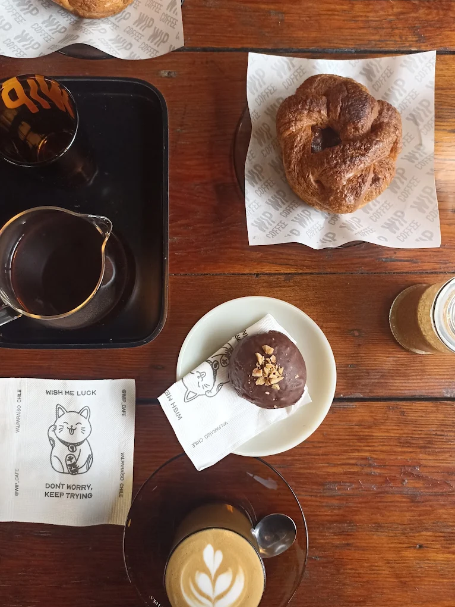
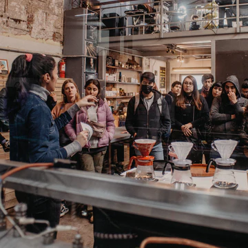
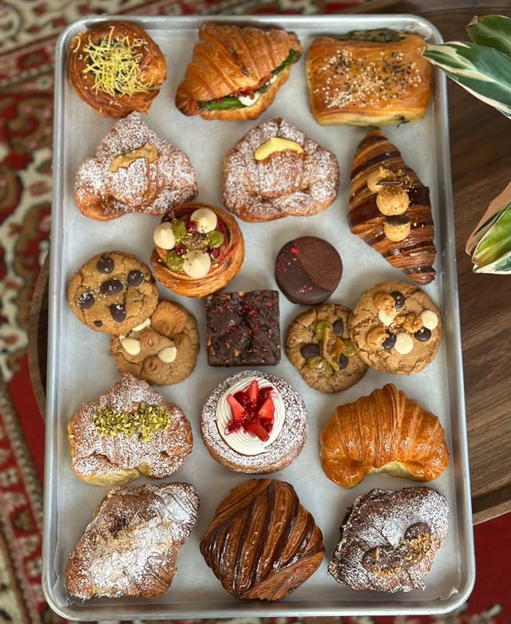

WIP Coffee
Ubicado en Dimalow, tiene un ambiente trnaquilo y es perfecto para terminar un almuerzo, tiene cafe de especialdiad, buena bolleria y esta Paz, una gran barista que no falla.

Taller café
Cafeteria de especialidad, ubicado en pleno barrio almendral recupero un galpon entre yungay y morris, el coldbrew una vez por semana los meses de calor no me lo pierdo .

Media Luna
Lo descubirmos hace poco, en Pilcomayo, por fuera parece pequeño, pero tiene un segundo piso con gran espacio, la bolleria creo que es de las mejores que eh comido en valparaíso hasta la fecha, y el cafe bien balanceado.